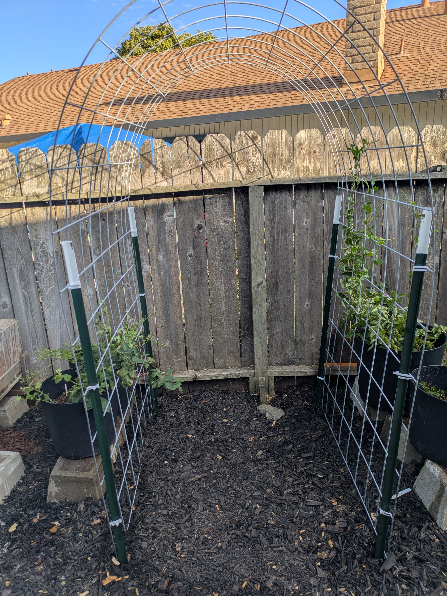

Welcome to the Site!
I'm brand new to gardening and wanted to create a space to share the entire experience—from the wins to the learning moments. I picked up gardening because I wanted to learn a fun new skill, and I'm excited to grow fresh, homegrown food for my family.
Follow Along With My Journey
Whether you're just starting out like me or already have a green thumb, I'd love for you to follow along with my progress! You can keep up with my latest updates, builds, and harvests by subscribing to my YouTube channel and checking back right here on this website.
Subscribe on YouTube | Watch Latest Videos
A Quick Thank You
I wouldn't even know where to start without the amazing gardening community online. A huge thank you to all the other creators who have been generously sharing their gardening guides, tips, and tutorials—your advice is helping turn this noob gardener into a grower!
What's Growing Now
A quick peek at what is currently growing:


